교통기사 (2021-03-07 기출문제)
1과목: 교통계획
1. 통행분포(trip distribution)단계에서 사용되는 모형으로 각 교통지구별 유출·입 교통량의 제약조건을 만족시킬 수 있는 범위 내에서 결과를 도출할 수 있도록 프라타(Fratar) 모형의 계산과정을 보다 단순화시킨 것은?
- 성장인자모형
- 중력모형
- 디트로이트모형
- 엔트로피모형
(정답률: 69%)

2. 저서「Traffic Towns」에서 도시의 구성 단위와 주거환경지구라는 지구교통의 개념을 발전시킨 사람은?
- H. Wright
- C.Stein
- Abercrombie
- Buchanan
(정답률: 66%)
3. 교통계획의 경제성 분석기법에 대한 설명이 옳은 것은?
- 편익-비용 분석법은 사업의 절대적 규모를 고려할 수 있다.
- 순현재가치(NPV) 분석법은 사업의 절대적 수익성을 측정할 수 없다.
- 내부수익률(IRR) 분석법은 평가 과정과 결과 이해가 용이하다.
- 경제성 분석기법에서 할인율은 분석 결과에 영향을 미치지 않는다.
(정답률: 53%)
4. 모집단의 개체가 똑같은 확률로 뽑히도록 표본단위를 모집단에서 추출하는 방법은?
- 비 확률 표본 설계
- 단순확률 표본 설계
- 집락확률 표본 설계
- 층화확률 표본 설계
(정답률: 74%)
5. 주차이용효율(e)을 이용하여 주차 수요를 추정하는 것은?
- P요소법
- 과거추세연장법
- 누적주차수요추정법
- 기·종점에 의한 주차수요추정법
(정답률: 73%)
6. 간섭기회모형(intervening opportunity model)에 대한 설명으로 틀린 것은?
- 통행자가 주어진 기회를 선택할 확률은 일정하다.
- 목적지의 선택은 목적지까지의 상대적 접근성에 의해 결정된다.
- 통행유입량을 그 목적지가 가지는 잠재적인 기회의 크기로 간주한다.
- 각 통행자는 자신의 통행비용을 최대화 한다는 가정을 한다.
(정답률: 68%)
7. 개별행태모형(disaggregate behavioral model)에 대한 설명이 틀린 것은?
- 확률적 효용이론에 근거한다.
- 종속변수는 통행량이며 독립변수는 사회경제지표다.
- 개인의 통행특성자료를 바탕으로 교통수요를 추정한다.
- 개인의 형태를 반영하기 때문에 공간적·시간적으로 영향을 받지 않는다.
(정답률: 49%)
8. 대중교통체계의 정책적 목표로 적합하지 않은 것은?
- 신속하고 안전한 대중교통체계 확립
- 버스 경쟁 노선의 극대화
- 수요에 따른 종합적 대중교통망 형성
- 교통수단 간의 연계 교통망 구축
(정답률: 75%)
9. 다음 설명에 해당하는 첨단운전자지원시스템은?
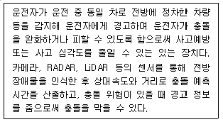
- 차로이탈경고장치(LDWS)
- 전방충돌경고장치(FCWS)
- 적응순항제어장치(ACC)
- 사각지대감시장치(BSD)
(정답률: 76%)
10. O-D조사에 사용하는 표본의 크기에 대한 설명으로 옳은 것은?
- 표본의 크기가 증가하면 조사 자료의 정확도는 감소한다.
- 통행량이 많은 경우 표본율을 증가시키면 오차의 범위가 극대화 된다.
- 표본의 크기가 증가하면 조사 정확도의 증가율은 점차 증가한다.
- 표본율이 같은 경우, 통행량이 많은 경우가 통행량이 적은 경우보다 정확한 추정값을 얻기 쉽다.
(정답률: 35%)
11. 전철 또는 지하철 건설 시 주요 고려하상으로 가장 거리가 먼 것은?
- 산업구조
- 승객수요
- 도시형태
- 인구밀도
(정답률: 72%)
12. Wardrop의 원리에 따른 아래의 상태를 뜻하는 것은?
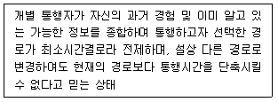
- 사회적 평형상태
- 교통체계의 평형상태
- 수요-공급의 평형상태
- 확률적 사용자 평형상태
(정답률: 56%)
13. Smeed(1949)는 유럽 20개국의 1938년도 교통사고계를 이용하여 다음과 같이 모형화하였다. 이에 대한 설명으로 옳지 않은 것은?
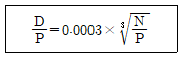
(단, N: 자동차등록대수(대), P: 인구수(명), D: 연간 교통사고사망자수(명))
- 가장 먼저 알려진 교통사고 예측모형이다.
- 인구가 증가하면 교통사고 사망자수도 증가한다.
- 자동차 등록대수가 증가하면 교통사고 사망자수도 증가한다.
- 인구의 한 단위 증가보다 자동차 등록대수의 한 단위 증가가 교통사고 사망자수에 더 큰 영향을 끼친다.
(정답률: 60%)
14. 다음 중 교통수요 관리방안과 그 특징에 대한 설명으로 틀린 것은?
- 10부제 운행 - 집행이 용이하다.
- 버스 이용하기 - 정치적 수용성이 적다.
- 공영주차장 요금인상 - 집행이 용이하다.
- 자가용 함께 타기 - 사회적 부담이 적다.
(정답률: 64%)
15. 공공자원의 사회적 기회비용을 반영하여 결정된 가격을 무엇이라고 하는가?
- 인플레이션
- 잠재가격
- 내부수익률
- 디플레이션
(정답률: 66%)
16. 폐쇄선 설정 시 고려 사항으로 옳은 것은?
- 가급적 행정구역 경계선과 일치시킨다.
- 가급적 다양한 토지이용이 포함되도록 한다.
- 대규모 도시인 경우, 존 당 1000~3000명을 포함시켜야 한다.
- 반드시 한 개의 간선도로가 존을 통과 하도록 하여야 한다.
(정답률: 63%)
17. 지하철과 비교하였을 때, 경전철이 갖는 일반적인 특성으로 틀린 것은?
- 차량의 중량이 가벼운 편이다.
- 지하철에 비해 주행 속도가 빠르다.
- 승객 승차대가 낮아 승·하차 시 편리하다.
- 도로 상을 운행하기도 한다.
(정답률: 70%)
18. A지역에서 B지역으로 이동할 때, 버스의 효용함수값이 -0.67, 지하철의 효용함수값이 -0.87일 때, 버스를 선택할 확률은? (단, 교통수단은 버스와 지하철만 고려하며, 이항로짓모형을 따른다.)
- 약 43.5%
- 약 45.0%
- 약 55.0%
- 약 56.5%
(정답률: 55%)
19. 계획대상과 그 특성에 따라 계획하고자 하는 구체적 시설을 기준으로 교통계획을 분류한 것에 해당하는 것은?
- 장기교통계획
- 가로망계획
- 도시교통계획
- 교통축계획
(정답률: 54%)
20. 도로의 일반적 결정기준에서 주간선도로와 주간선도로의 배치간격 기준으로 옳은 것은?
- 150m 내외
- 250m 내외
- 500m 내외
- 1000m 내외
(정답률: 66%)
2과목: 교통공학
21. 차량추종모형에서 운전자의 반응시간과 관련하여 고려하는 변수로 가장 거리가 먼 것은?
- 차량 속도
- 차량 위치
- 운전자 민감도
- 차량군의 밀도 차이
(정답률: 43%)
22. 어느 교차로의 도착교통량이 시간당 600대이고, 도착 교통량이 포아송(Poisson) 분포를 따른다고 가정할 때, 30초 동안에 6대가 도착할 확률은?
- 0.127
- 0.146
- 0.175
- 0.188
(정답률: 47%)
23. 주차요금을 내기 위해 무작위로 도착하는 차량의 평균 도착시간 간격이 60초이고, 요금징수시간은 평균 18초인 음지수분포를 가질 때 도착차량이 대기해야 할 확률은?
- 0.1
- 0.3
- 0.5
- 0.7
(정답률: 43%)
24. 어느 교통류에서 차량별 구성비가 트럭 10%, 버스 15%인 경우 중차량보정계수(fHV)는 약 얼마인가? (단, 일반지형 중 평지의 경우이며, 승용차 환산계수는 ET=1.7, EB=1.5 이다.)
- 0.87
- 0.91
- 0.70
- 0.76
(정답률: 46%)
25. 차량의 미끄럼 마찰계수에 영향을 주지 않는 것은?
- 타이어 상태
- 노면습윤 상태
- 운전자 반응시간
- 도로 포장면 재질
(정답률: 70%)
26. 감응식신호에서 현시가 다음으로 넘어가는 조건으로 가장 거리가 먼 것은?
- 주기초과(cycle-out)
- 강제변경(force-out)
- 차량간격초과(gap-out)
- 설정최대값초과(max-out)
(정답률: 32%)
27. 아래와 같은 특징을 갖는 속도-밀도 모형은?
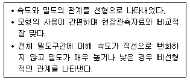
- Pipes 모형
- Edie 모형
- Greenburg 모형
- Greenshield 모형
(정답률: 65%)
28. 다음 설명에 해당하는 고속도로 기본구간의 서비스 수준은?
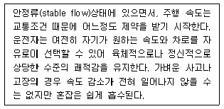
- A
- B
- C
- D
(정답률: 59%)
29. 어느 교차로의 한 접근로의 지체도 조사 결과가 아래와 같다. 신호주기가 110초, 조사단위시간이 15초 일 때, 정지차량당 평균정지지체는? (단, 조사시간대에 관측된 총 진입 교통량 중 정지 차량수는 95대이다.)
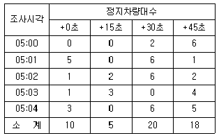
- 약 6.6초
- 약 8.4초
- 약 12.3초
- 약 15.0초
(정답률: 41%)
30. 어느 교통류의 속도(u)와 밀도(k)의 관계가 아래와 같을 때, 이 교통류의 임계밀도, 임계속도, 용량은 얼마인가?
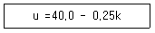
- 임계밀도 : 70vpk, 임계속도 : 20kph, 용량 : 1400vph
- 임계밀도 : 80vpk, 임계속도 : 20kph, 용량 : 1600vph
- 임계밀도 : 70vpk, 임계속도 : 25kph, 용량 : 1750vph
- 임계밀도 : 80vpk, 임계속도 : 25kph, 용량 : 2000vph
(정답률: 65%)
31. 다음은 녹색시간 동안 방출되는 용량이 한 주기 동안의 도착량보다 많은 경우, 신호교차로에서의 대기행렬모형이다. 정지하는 차량의 비율(PS)로 옳은 것은? (단, r: 유효적색시간(초), g: 유효녹색시간(초), q: 한 접근로의 평균 도착교통류율(pcu/초), to: 녹색신호의 시작에서부터 대기행령이 완전히 소멸 되는 시간(초))
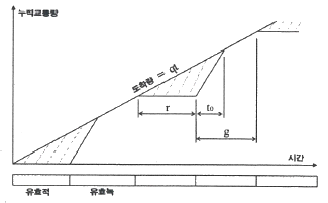
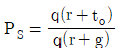
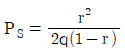
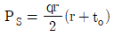
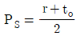
(정답률: 57%)
32. 어느 신호교차로에서 15분 간격으로 조사한 교통량이 아래와 같을 때 첨두시간계수(PHF)는?
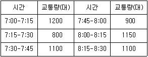
- 약 0.83
- 약 0.86
- 약 0.92
- 약 0.95
(정답률: 50%)
33. 운전자에 대한 일반적인 설명으로 틀린 것은?
- 운전자는 속도가 증가하면 주변을 볼 수 있는 시야가 줄어든다.
- 운전자는 앞차의 가·감속에 반응하며 운전을 한다.
- 운전자의 연령이 높을수록 평균반응시간이 줄어드는 경향이 있다.
- 운전자가 도로상의 낙하물을 보고 행동하는 과정은 지각, 인지, 판단, 반응으로 구분하여 볼 수 있다.
(정답률: 62%)
34. 다음 그림과 같이 좌우회전이 허용되지 않은 간단한 2현시 교차로의 접근교통량에서 동서로와 남북로 간 유효녹색 시간의 배분은?
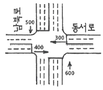
- 1:1
- 1:2
- 2:3
- 7:11
(정답률: 32%)
35. 다음 중 위해물 주위 혹은 이를 지나치는 차량에게 안전한 주행선을 안내하는 일종의 이동차로 표시에 해당하는 교통통제설비는?
- 방호울타리
- 교통콘
- 반사경
- 그루빙
(정답률: 68%)
36. 양방향정지 비신호교차로의 효과척도는?
- 밀도
- 평균운영지체
- 시간당 상충횟수
- 방향별 교차로 진입교통량
(정답률: 43%)
37. 신호교차로의 운영 주기가 90초, 각 현시의 임계 차로군의 교통량비의 합이 0.72, 교차로 전체의 임계 V/c 비 값이 0.76 일 때, 이 교차로의 주기 당 총 손실 시간은?
- 약 3초
- 약 5초
- 약 7초
- 약 9초
(정답률: 29%)
38. 다음 중 도로에 매설하지 않고 사용할 수 있는 검지기는?
- 압력반응검지기
- 감응루프식검지기
- 초음파검지기
- 충격식검지기
(정답률: 65%)
39. 교통류의 특성을 나타내는 기본 요소와 가장 거리가 먼 것은?
- 속도
- 밀도
- 교통량
- 지체도
(정답률: 66%)
40. 다음 중 일정 구간에서 시험차량이 추월을 당한 횟수만큼 추월을 한 횟수를 유지하면서 운행하며 주행시간을 기록하는 방법은?
- 번호판 판독법
- 주행차량이용법
- 평균속도운행법
- 교통류적응운행법
(정답률: 40%)
3과목: 교통시설
41. 노면의 종류에 따른 차도의 횡단경사 기준이 잘못 연결된 것은?
- 아스팔트 포장도로“ 1.5% 이상 2.0% 이하
- 간이포장도로: 2.0% 이상 4.0% 이하
- 비포장도로: 2.0% 이상 5.0% 이하
- 시멘트 포장도로: 1.5% 이상 2.0% 이하
(정답률: 61%)
42. 연결로의 형식 기준 및 설계속도를 적용할 때의 주의사항으로 틀린 것은?
- 이용 교통량이 많을 것으로 예상되는 연결로는 본선의 설계기준을 적용하여 설계한다.
- 본선의 분류단 부근에는 보통 주행속도의 변화가 있으므로, 속도 변화에 적합한 완화구간을 설치하여 운전자가 주행속도를 자연스럽게 바꿀 수 있도록 유도한다.
- 연결로의 실제 주행속도는 선형에 따라 변하므로 편경사 등의 기하구조를 설계할 때는 실제 주행속도는 고려할 필요가 없다.
- 연결로의 형식은 오른쪽 진출입을 원칙으로 하며, 이 때 진출입의 연속성 및 일관성이 유지되도록 하여야 한다.
(정답률: 69%)
43. 비상주차대의 유효길이 산정 기준과 가장 관계가 깊은 것은?
- 설계기준 자동차 길이
- 도로의 설계속도
- 접속길이
- 진입속도
(정답률: 44%)
44. 주차형식에 대한 설명이 틀린 것은?
- 평행주차는 주차장의 길이가 길어지는 단점이 있다.
- 30°전진주차는 차로 진행 방향으로 긴주차폭이 필요하다.
- 90°각도주차는 30°전진주차보다 1대당 주차소요 면적이 작다.
- 평행주차는 측방의 주차면을 병렬로 이용하여 각도주차보다 주차용량을 증대시킬 수 있다.
(정답률: 60%)
45. 평면교차로를 도류화하는 목적으로 옳지 않은 것은?
- 자동차가 합류, 분류 및 교차하는 위치와 각도를 조정한다.
- 자동차가 진행해야 할 경로를 명확히 하고 주된 이동류에 통행 우선권을 제공한다.
- 보행자 안전지대를 설치하기 위한 장소와 교통제어시설을 잘 보이는 곳에 설치하기 위한 장소를 제공한다.
- 교차로의 면적을 줄임으로써 차량 간의 상충면적을 늘려준다.
(정답률: 67%)
46. 설계속도가 50km/h, 편경사가 0.06, 횡방향 미끄럼 마찰계수가 0.2일 때, 최소곡선반경은?
- 약 46m
- 약 56m
- 약 66m
- 약 76m
(정답률: 55%)
47. 버스정류시설 중 버스 승객의 승강을 위하여 본선 차로에서 분리하여 설치된 띠 모양의 공간을 의미하는 것은?
- 버스정류장(Bus Bay)
- 버스정류소(Bus Stop)
- 버스터미널(Bus Terminal)
- 간이버스정류장
(정답률: 63%)
48. 설계속도가 70km/h 이상 80km/h 미만인 지방지역 도로의 차로 폭 기준으로 옳은 것은?
- 2.75m 이상
- 3.00m 이상
- 3.25m 이상
- 3.50m 이상
(정답률: 48%)
49. 인터체인지의 연결로 형식 중 좌직결 연결로(Left-direct Connection)에 관한 설명으로 틀린 것은?
- 고속인 좌측 차선에서 유·출입하므로 위험하다.
- 용량이 작으므로 이용 교통량이 작은 곳에 적합한 형식이다.
- 분기점과 같이 대량의 고속 교통을 처리하며, 좌회전 교통이 주류인 곳에 적용한다.
- 본선 차도의 좌·우에 연결로가 교대로 존재하면 불필요한 엇갈림이 생긴다.
(정답률: 39%)
50. 설계속도가 60km/h일 때 확보하여야 하는 최소 정지시거 기준으로 옳은 것은?
- 55m 이상
- 75m 이상
- 95m 이상
- 110m 이상
(정답률: 41%)
51. 좌회전 차로 설계 시 좌회전 차로의 길이와 차로 폭을 결정할 때 동시에 고려하여야 할 요소로 가장 거리가 먼 것은?
- 신호주기
- 접근속도
- 차량 혼입률
- 좌회전교통량
(정답률: 48%)
52. 도로의 출입 등의 기준 및 주요 원칙에 대한 설명으로 옳은 것은?
- 특별한 사유가 없으면 고속국도와 교차하는 모든 도로와 평면교차가 되도록 한다.
- 사실상 출입제한은 가장 약한 접근관리 기법의 하나이다.
- 접근관리 설계기법이랑 주도로와 부도로가 접속할 때 주도로의 간격, 기하구조 설계, 교통제어방식을 합리적으로 관리하는 설계기법을 말한다.
- 고속국도와 자동차 전용도로는 지정된 곳에 한정하여 자동차만 출입이 허용되도록 하여야 한다.
(정답률: 42%)
53. 도로와 철도가 평면교차하는 경우 교차각은 최소 얼마 이상으로 하여야 하는가?
- 15°
- 30°
- 45°
- 60°
(정답률: 64%)
54. 평면곡선반지름이 150m인 평면곡선부의 최소 확폭량 기준이 옳은 것은? (단, 설계기준차량이 대형 자동차인 경우)
- 0.25m
- 0.50m
- 0.75m
- 1.00m
(정답률: 19%)
55. 고속국도 휴게시설 등에의 도로안전시설 설치 및 관리에 관한 아래 설명에서, ㉠과 ㉡에 들어갈 내용이 모두 옳은 것은?
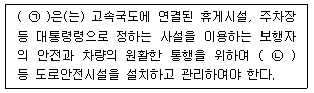
- ㉠: 경찰서장, ㉡: 교통관리시설
- ㉠: 국토교통부장관, ㉡: 과속방지시설
- ㉠: 행정안전부장관, ㉡: 교통관리시설
- ㉠: 경찰청장, ㉡: 과속방지시설
(정답률: 60%)
56. 아래 내용 중 ( )안에 들어갈 말로 옳은 것은?
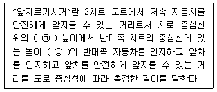
- ㉠: 1.0m, ㉡: 1.2m
- ㉠: 1.0m, ㉡: 1.5m
- ㉠: 1.2m, ㉡: 1.0m
- ㉠: 1.5m, ㉡: 1.0m
(정답률: 43%)
57. 우리나라 도로교통법규에 따른 신호기의 종류에 해당하지 않는 것은?
- 보행 신호등
- 회전 신호등
- 자전거 신호등
- 노면전차 신호등
(정답률: 40%)
58. 설계속도와 설계구간에 대한 내용으로 옳지 않은 것은?
- 설계속도란 도로설계의 기초가 되는 자동차의 속도를 말한다.
- 설계속도에 따라 곡선반경, 곡선의 길이, 종단경사 등이 결정된다.
- 설계구간이란 도로의 종류나 설계속도가 같으며, 같은 설계기준이 적용되는 구간을 말한다.
- 노선의 기하구조는 설계구간이 짧은 곳에 비연속적으로 적용하는 것이 바람직하다.
(정답률: 72%)
59. Park and Ride 주차시설에 대한 설명으로 옳은 것은?
- 대규모 유원지, 상가에 설치된 주차장이다.
- 공원이나 유원지에서 입장료를 낸 사람에게 개방된 주차장이다.
- 공원에서 공원 내를 운행하는 셔틀버스로 갈아타기 위해 만든 주차장이다.
- 대중교통 연계지점에 건설된 주차장으로 이곳에 승용차를 주차시킨 후 대중교통으로 환승하게 하기 위해서 만든 주차장이다.
(정답률: 64%)
60. 도로를 보호하고 비상시에 이용하기 위하여 차도에 접속하여 설치하는 도로의 부분을 무엇이라 하는가?
- 변속차로
- 분리대
- 회전차로
- 길어깨
(정답률: 69%)
4과목: 도시계획개론
61. 후크(hook) 신도시 계획의 기본요소와 가장 거리가 먼 것은?
- 시가화 지역과 농촌 지역이 통합
- 전원 속의 도시
- 신도시의 도시성 향상
- 자동차와 보행자를 분리하는 도로망 체계
(정답률: 39%)
62. 케빈 린치(Kevin Lynch)가 주장한 도시 경관 이미지의 구성요소에 해당하지 않는 것은?
- 통로(path)
- 경계(edge)
- 상징물(landmark)
- 광장(open space)
(정답률: 50%)
63. 기존의 도로를 확장하는 경우 고려할 사항으로 옳지 않은 것은?
- 기존 도로 주변 토지의 이용효율을 고려한다.
- 공사의 난이도를 고려한다.
- 기존 도로의 선형을 고려한다.
- 가급적 기존 도로의 양쪽 방향으로 확장한다.
(정답률: 53%)
64. 수도권정비계획법상 권역의 구분에 해당하지 않는 것은?
- 과밀억제권역
- 개발유보권역
- 성장관리권역
- 자연보전권역
(정답률: 44%)
65. 고대 그리스 도시에서 교역과 정치활동의 중심지였던 도심광장을 무엇이라고 하는가?
- 포럼(Forum)
- 아고라(Agora)
- 휘닉스(Ponyx)
- 아카데미(Academy)
(정답률: 59%)
66. 제1차 국통종합개발계획과 비교하여 제2차 국토종합개발계획의 주요 정책 방향으로 가장 거리가 먼 것은?
- 전국을 28개 생활권으로 구분하고 각 생활권의 중심도시와 주변지역을 상호 연계하여 발전될 수 있도록 시도하였다.
- 다핵 구조의 형성 방안으로 성장거점도시 정책이 채택되었다.
- 대규모 공업기지를 우선 배치하고, 교통통신, 수자원 및 에너지 공급망을 확충 정비한다.
- 국토의 균형발전을 꾀하고 국민생활환경 개선에 많은 노력을 기울였다.
(정답률: 40%)
67. 힐 호스트(O. Hilhost)의 지역 구분에 해당하지 않는 것은?
- 번성지역
- 계획권역
- 분근지역
- 동질지역
(정답률: 30%)
68. 도로망의 구성형태와 대표도시의 연결이 옳은 것은?
- 방사형 : 뉴욕(New York)
- 대각선 삽입형: 파리(Paris)
- 방사환상형: 모스크바(Moscow)
- 격자형: 카를스루에(Karlsruhe)
(정답률: 59%)
69. 고대 중국 장안성의 가로망은 어떤 형태를 기본으로 하였는가?
- 격자형
- 방사형
- 불규칙형
- 환상형
(정답률: 50%)
70. 도시공원 및 녹지 등에 관한 법률상 생활권 공원의 유형에 해당하지 않는 것은?
- 소공원
- 근린공원
- 어린이공원
- 도시자연공원
(정답률: 52%)
71. 단독주택 및 다세대주택이 밀집한 지역에서 정비기반시설과 공동이용시설 확충을 통하여 주거환경을 보전·정비·개량하기 위하여 시행하는 정비사업은?
- 재개발사업
- 재건축사업
- 주건환경개선사업
- 도시환경정비사업
(정답률: 51%)
72. 샤핀(F.S.Chapin)이 제시한 토지이용의 결정요인 중 공공 이익의 요소에 해당하지 않는 것은?
- 쾌적성
- 보건성
- 편리성
- 균일성
(정답률: 49%)
73. 도시계획 과정에서의 주민참여에 대한 설명으로 틀린 것은?
- 도시계획의 입안 및 집행에 지역주민이 직접·간접적으로 참여할 수 있다.
- 폐쇄적인 계획 추진에서 발생하기 쉬운 오류와 저항을 사전에 예방할 수 있다.
- 주민 참여는 개발에 의한 이익을 균등 배분하기 위함이다.
- 주민의 의사와 욕구를 개발목표에 맞추어 구체화시킴으로써 도시 행정의 능률적인 수행을 도모할 수 있다.
(정답률: 61%)
74. 산업별 종사자수가 아래와 같을 때, 입지계수에 의한 J도시의 기반 산업은?
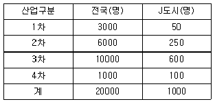
- 1차 및 3차산업
- 1차 및 2차산업
- 2차 및 3차산업
- 3차 및 4차산업
(정답률: 44%)
75. 녹지의 유형 중 대기오염, 소음, 진동, 악취 그밖에 이에 준하는 공해와 각종 사고나 자연재해, 그 밖에 이에 준하는 재해 등의 방지를 위하여 설치하는 것은?
- 경관녹지
- 방재녹지
- 완충녹지
- 연결녹지
(정답률: 57%)
76. 용적률의 개념을 정확히 표현한 것은?
- 건축면적/대지면적
- 공지면적/대지면적
- 연면적/건축면적
- 연면적/대지면적
(정답률: 34%)
77. 다음 중 기반시설로서의 교통시설에 해당하지 않는 것은?
- 도로
- 자동차정류장
- 폐차장
- 궤도
(정답률: 51%)
78. 도시인구를 예측하는데 있어서 과거추세에 의한 예측방법이 아닌 것은?
- 등차급수법
- 최소자승법
- 집단생잔법
- 지수함수법
(정답률: 50%)
79. 국토의 계획 및 이용에 관한 법률 상 도시·군 관리계획에 해당되는 내용이 아닌 것은?
- 도시개발사업이나 정비사업에 관한 계획
- 도시·군기본계획의 지정 또는 변경에 관한 계획
- 지구단위계획구역의 지정 또는 변경에 관한 계획
- 용도지역·용도지구의 지정 또는 변경에 관한 계획
(정답률: 31%)
80. 토지이용의 입지 배분 시 주거지역의 입지 조건으로 고려할 사항과 가장 거리가 먼 것은?
- 기반시설
- 접근성
- 지형조건
- 경제성
(정답률: 51%)
5과목: 교통관계법규
81. 국토교통부장관은 국가의 효율적인 교통체계를 구축하기 위한 국가기간교통망계획을 몇 년 단위로 수립하여야 하는가?
- 5년
- 10년
- 15년
- 20년
(정답률: 43%)
82. 신호기(차량 신호등)의 신호 종류에 따른 의미가 옳은 것은?
- 황색등화 일 때 차마는 계속 직진하고, 보행자는 도로를 횡단할 수 있다.
- 황색등화 일 때 차마는 우회전 할 수 없다.
- 황색등화가 점멸일 때 차마는 적색 등화일 때처럼 정지선에 정지하여야 한다.
- 적색등화 일 때 신호에 따라 진행하는 다른 차마의 교통을 방해하지 아니하고 우회전할 수 있다.
(정답률: 50%)
83. 도로교통법령상 차로의 설치 및 차로에 따른 통행구분 기준에 대한 설명으로 틀린 것은?
- 차로는 횡단보도·교차로 및 철길 건널목에는 설치할 수 없다.
- 차로의 순위는 도로의 오른쪽 가장자리에 있는 차로부터 1차로로 한다.
- 시·도경찰청장은 차마의 교통을 원활하게 하기 위하여 필요한 경우 도로에 행정안전부령으로 정하는 차로를 설치할 수 있다.
- 보도와 차도의 구분이 없는 도로에 차로를 설치하는 때에는 그 도로의 양쪽에 길가장자리구역을 설치하여야 한다.
(정답률: 62%)
84. 광역교통 개선대책을 수립하여야 하는 대규모 개발사업의 범위에 해당하지 않는 것은? (단, 그 밖에 다른 법률에서 광역교통개선대책의 수립대상으로 규정한 사업의 경우는 고려하지 않는다.)
- 사업면적이 110만m2인 택지개발사업
- 시설계획지구의 면적이 200만m2인 관광단지조성사업
- 시설계획지구의 면적이 200만m2인 산업단지조성사업
- 수용인구가 3만명인 도시개발사업
(정답률: 21%)
85. 노외주차장인 주차전용건축물의 건축 제한 기준이 틀린 것은?
- 건폐율 : 100분의 90 이하
- 용적률 : 1500% 이하
- 대지면적의 최소한도 : 45m2 이상
- 연면적 : 1만제곱미터 이상
(정답률: 32%)
86. 도시교통정비촉진법에 따라 ( )에 들어갈 내용으로 옳은 것은?
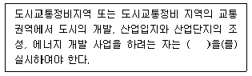
- 환경영향평가
- 기술영향평가
- 교통영향평가
- 타당성평가
(정답률: 53%)
87. 교통안전법령상 교통안전관리자가 자격의 종류에 해당하지 않는 것은?
- 도로교통안전관리자
- 철도교통안전관리자
- 항만교통안전관리자
- 선박교통안전관리자
(정답률: 62%)
88. 건축물의 연면적 중 주차장으로 사용되는 부분의 비율이 얼마 이상인 경우 주차전용 건축물로 정의하는가? (단, 건축법령상 건축물의 용도에 따른 사항은 고려하지 않는다.)
- 95%
- 85%
- 75%
- 55%
(정답률: 55%)
89. 관계 중앙행정기관의 장이 교통시설 관련 개발사업을 추진하려는 경우, 연계교통체계 구축대책을 수립·시행해야 하는 교통시설에 해당하지 않는 것은? (단, 대통령령으로 정하는 대규모 개발사업은 고려하지 않는다.)
- 「항만법」에 따른 항만
- 「공항시설법」에 따른 공항
- 「철도건설법」에 따른 고속철도
- 「물류시설의 개발 및 운영에 관한 법률」에 따른 물류단지
(정답률: 25%)
90. 도로관리청이 자동차전용도로를 지정하려는 경우 자동차전용도로의 연장은 최소 얼마 이상이 되도록 하여야 하는가? (단, 기타의 경우는 고려하지 않는다.)
- 3km
- 5km
- 7km
- 10km
(정답률: 53%)
91. 도로법에 규정된 도로의 종류에 해당하지 않는 것은?
- 면도
- 군도
- 고속국도
- 일반국도
(정답률: 57%)
92. 도시교통정비촉진법령에 의한 교통혼잡 특별관리구역 또는 교통혼잡 특별관리시설물의 지정 기준이 옳은 것은? (단, 혼잡시간대란 일정한 지역을 통과하거나 둘러싼 도로 중 1개 이상의 도로에서 시간대별 평균 통행속도가 시속 15km 미만인 상태다.)
- 혼잡시간대가 평일 평균 하루 3회 이상 발생할 것
- 시설물을 둘러싼 도로 중 1개 이상의 도로에서 혼잡시간대가 토·일요일과 공휴일을 포함한 주 중 가장 많이 발생하는 날을 기준으로 하루 3회 이상 발생할 것
- 혼잡시간대가 가장 많이 발생하는 날의 혼잡시간대 중 1회 이상의 혼잡시간대에 해당 도로를 통하여 해당 시설물로 진입하거나 진출하는 교통량이 그 도로 한쪽 방향 교통량의 15% 이상일 것
- 혼잡시간대에 해당 지역으로 진입하거나 진출하는 교통량이 해당 지역을 통과하는 도로의 계획 교통량의 15% 이상일 것
(정답률: 20%)
93. 대도시권 광역교통기본계획에 포함되어야 할 사항에 해당하지 않는 것은? (단, 그 밖에 대도시권에 광역교통의 개선을 위하여 대통령령으로 정하는 사항은 고려하지 않는다.)
- 광역교통시설 부담금의 배분 및 사용에 관한 사항
- 대도시권 광역교통의 현황 및 장기적인 교통 수요의 예측에 관한 사항
- 대도시권 대중교통수단의 장기적인 확충 및 개선에 관한 사항
- 광역교통기본계획의 목표 및 단계별 추진전략에 관한 사항
(정답률: 39%)
94. 국가통합교통체계효율법령상 환승센터 및 복합환승센터 구축 기본계획의 수립단위로 옳은 것은?
- 3년
- 5년
- 10년
- 20년
(정답률: 55%)
95. 평행주차형식 외의 경우 일반형 주차단위 구획의 너비와 길이 기준이 옳은 것은?
- 너비 2.0m 이상, 길이 3.6m 이상
- 너비 2.3m 이상, 길이 3.6m 이상
- 너비 2.3m 이상, 길이 5.0m 이상
- 너비 2.5m 이상, 길이 5.0m 이상
(정답률: 21%)
96. 신설·확장 또는 개량한 도로로서 포장된 도로의 노면에 대해서는 그 신설·확장 또는 개량한 날부터 도로 굴착을 수반하는 도로점용허가를 할 수 없는 기간 기준으로 옳은 것은? (단, 보도 및 기타의 경우는 고려하지 않는다.)
- 6개월 이내
- 1년 이내
- 2년 이내
- 3년 이내
(정답률: 22%)
97. 도시교통정비촉진법령상 시장 또는 군수가 중기계획의 수립을 위하여 실시하는 조사에 반드시 포함되어야 하는 내용이 아닌 것은?
- 토지이용 현황 및 계획
- 화물자동차 과적 현황 및 단속 계획
- 교통안전시설 확충계획
- 교통혼잡지역의 현황·원인 및 대책
(정답률: 58%)
98. 교통안전법의 용어 정의 중 “지정행정기관”에 해당하는 것은? (단, 국무총리가 교통안전정책상 특히 필요하다고 인정하여 지정하는 경우는 고려하지 않는다.)
- 법제처
- 외교부
- 농림축산식품부
- 과학기술정보통신부
(정답률: 33%)
99. 시장 또는 군수가 대중교통의 이용을 촉진하고 원활한 교통소통을 확보하기 위하여 필요하다고 인정되는 경우에 취해야 하는 조치가 아닌 것은?
- 간섭급행버스체계의 구축
- 대중교통수단 제한속도의 상향
- 노선버스중심의 지능형교통체계 구축
- 고가 또는 지하도로 등 교차로의 입체화
(정답률: 49%)
100. 다음과 같은 노면표시를 설치하여야 하는 장소는?
- 동일 방향 도로의 전방에 장애물이 있는 지점
- 교차로나 합류도로 등에서 차가 양보하여야 하는 지점
- 노폭이 넓은 도로의 중앙지대에 안전지대를 설치할 필요가 있는 장소
- 도로를 무단 횡단하는 보행자가 빈번하여 운전자가 주의하여야 하는 장소
(정답률: 60%)
6과목: 교통안전
101. 다음 중 충격흡수시설의 설치 장소로 가장 부적합한 곳은?
- 요금소 전면
- 급커브 지역
- 지하차도 입구
- 연결로 출구 분기점
(정답률: 32%)
102. 야간운행 중 마주오는 차량의 전조등 불빛으로 인해 순간적으로 보행자나 장애물이 보이지 않는 현상을 무엇이라 하는가?
- 암순응 현상
- 증발 현상
- 암조 현상
- 현혹 현상
(정답률: 49%)
103. 교통사고 현장에 나타난 스키드 마크(skid mark)의 길이가 12m 일 때, 사고차량의 제동직전 주행속도는? (단, 사고현장은 평지이고, 타이어와 노면의 마찰계수는 0.8 이다.)
- 약 44km/h
- 약 49km/h
- 약 54km/h
- 약 59km/h
(정답률: 47%)
104. 연속된 교차로에서 첫 번째의 녹색 신호 시작과 다음 신호의 녹색 신호 시작 시간과의 시간 간격을 무엇이라 하는가?
- 분할비(split ratio)
- 옵셋(offset)
- 간격(interval)
- 주기(cycle)
(정답률: 62%)
1⑤. 교통사고의 원인이 되는 미끄러운 노면의 개선 대책으로 가장 거리가 먼 것은?
- 노면 재포장
- 제한속도 낮춤
- 시야 장애물 제거
- 미끄럼 주의표지 설치
(정답률: 63%)
106. 2대 이상의 자동차가 동일한 방향으로 주행하던 중 뒤차가 앞차의 후면을 충격한 사고를 무엇이라 하는가?
- 추돌
- 전도
- 전복
- 충돌
(정답률: 63%)
107. 교통사고 사상자 기준에 의한 교통사고로 인한 사망사고의 정의로 옳은 것은?
- 교통사고 발생 시부터 1일(24시간) 이내 사망자를 낸 사고
- 교통사고 발생 시부터 5일(120시간) 이내 사망자를 낸 사고
- 교통사고 발생 시부터 10일(240시간) 이내 사망자를 낸 사고
- 교통사고 발생 시부터 30일(720시간) 이내 사망자를 낸 사고
(정답률: 64%)
108. 사고위험지역 선정 시 교통량이 적은 지방부도로에 효과적이지만 교통량 수준에 따른 요인은 고려하지 않는 단점이 있는 방법은?
- 사고율법
- 사고건수법
- 율-품질관리법
- 사고건수-율법
(정답률: 56%)
109. 교통사고다발지역 개선 방법 중 시거(Sight Distance) 불량에 대한 개선 방안으로 가장 거리가 먼 것은?
- 시애 장애물 제거
- 중앙분리대 설치
- 시선유도표지 설치
- 가로조명 개선
(정답률: 59%)
110. 과거의 사고자료를 사용하지 않고, 충돌 가능성이 높은 곳에서 교통사고가 많이 발생한다는 가정하에 짧은 시간 동안 교통사고 발생 개연성이 높은 차량의 위험운행행태를 관측하여 그 장소의 사고위험성을 평가하는 방법은?
- 교통상충법
- 격자형좌표법
- 통계적방법
- 사고패턴비교법
(정답률: 50%)
111. 운전자와 교통사고의 관계에 대한 설명으로 틀린 것은?
- 운전자의 신체적 특성은 사고 발생과 관계가 없다.
- 운전자 교육은 안전한 행동을 하도록 운전자에게 동기를 부여한다.
- 운전자의 연령과 성별에 따라 사고유형이 달라질 수 있다.
- 피로와 졸음은 운전자의 능력을 감소시킨다.
(정답률: 63%)
112. 교통시설안전진단의 종류 및 대상사업 기준에 대한 설명으로 틀린 것은?
- 최근 5년간 사망 교통사고가 3건 이상 발생한 도로의 교차로 경계선으로부터 100m까지의 구간에 대하여 운영단계 도로안전 진단을 실시하여야 한다.
- 총 길이 5km 이상인 고속국도 건설 사업은 설계단계 도로안전진단 대상에 해당한다.
- 설계단계 도로안전진단이란 일정 규모 이상의 도로를 설치하는 경우 도로의 교통안전에 관한 위험요인을 조사·측정 및 평가하기 위하여 설계단계에서 실시하는 것을 말한다.
- 운영단계 도로안전진단이란 교통시설의 결함여부 등을 조사한 결과 당해 교통사고 발생원인과 관련하여 교통시설에 진단이 필요하다고 인정되는 때 교통안전진단기관에 의뢰하여 실시하는 것을 말한다.
(정답률: 32%)
113. 한 차량이 도로를 벗어나 높이 5m의 언덕 아래로 추락하였다. 도로의 끝으로부터 추락한 차량까지의 거리가 10m라면 초기속도는?
- 약 20km/h
- 약 36km/h
- 약 47km/h
- 약 60km/h
(정답률: 46%)
114. 차량의 타이어가 고속으로 회전하면서 접지부에서 받은 타이어의 변형이 다음 접지 시점까지도 복원되지 않고 물결 형상의 진동을 발생시켜 결국 타이어가 파괴되는 현상은?
- 휠 리프트
- 노즈다이브
- 스탠딩웨이브
- 하이드로플래닝
(정답률: 68%)
115. 시행된 교통안전개선사업의 평가방법 중 사업 지점에서의 시행 전·후 효과척도의 비율(%) 변화량을 동 기간 동안 개선이 시행되지 않은 유사 지점에서의 비율(%) 변화량과 비교하여 개선 효과를 평가하는 방법은?
- 사전·사후분석(Before After Study)
- 비교평가분석(Comparative Parallel Study)
- 평균사고율법(Rate-Quality Control Method)
- 통제지점에 의한 사전·사후분석(Before and After Study with Control Sites)
(정답률: 41%)
116. 사고건수법에 따른 교통사고 위험지점 선정 시 필요한 자료로 가장 거리가 먼 것은?
- 기간
- 교통량
- 구간거리
- 사고지점
(정답률: 37%)
117. 일평균교통량이 10200대인 도로(구간길이 1.3km)에서 3년 동안 사망사고 3건, 부상사고 6건, 대물피해사고 28건이 발생하였다. 교통사고 피해정도에 의한 방법에 따른 백만차량당 교통사고율은? (단, 사고유형별 가중치는 사망사고 12, 부상사고 3, 대물피해사고 1 이다.)
- 2,55건
- 3.37건
- 4.41건
- 5.65건
(정답률: 48%)
118. 방호울타리의 기능으로 가장 거리가 먼 것은?
- 보행자 또는 도로변의 주요 시설을 안전하게 보호한다.
- 충돌한 차를 정상적인 진행 방향으로 복귀시킨다.
- 도로 끝 및 도로 선형을 명시한다.
- 보행자의 무단횡단을 억제한다.
(정답률: 45%)
119. 주행 중이던 A차량이 주차해 있던 B차량과 충돌하여 15m를 함께 미끄러져 정지하였다. A와 B차량의 무게가 각각 1000kg, 900kg일 때, A차량의 충돌 전 초기 속도는? (단, 마찰계수는 0.7이며, 경사는 없고 완전비탄성충돌이라고 가정한다.)
- 약 71.5km/h
- 약 82.6/h
- 약 89.5/h
- 약 98.1
(정답률: 33%)
120. 차량 바퀴의 미끄럼 흔적에 대한 설명이 틀린 것은?
- 양 뒷바퀴의 미끄럼 흔적들 모두가 전륜의 미끄럼 흔적을 벗어나지 않으면 직선 미끄럼으로 간주한다.
- 직선 미끄럼의 차량 미끄럼 거리는 그 차량의 모든 바퀴들의 미끄럼 흔적 중 가장 긴 미끄럼 흔적의 길이로 한다.
- 미끄러지는 동안에 차량이 회전하는 경우 곡선의 미끄럼 흔적을 남긴다.
- 곡선 미끄럼의 경우 각 바퀴의 미끄럼 흔적을 측정하고 그 중 가장 긴 미끄럼 흔적의 길이를 미끄럼 길이로 한다.
(정답률: 53%)